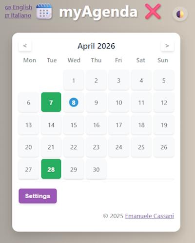
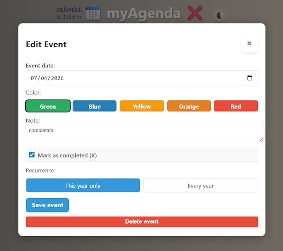
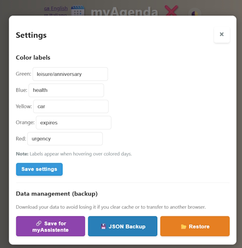
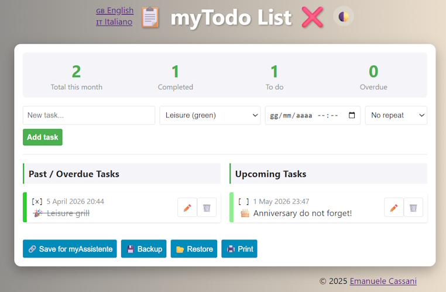
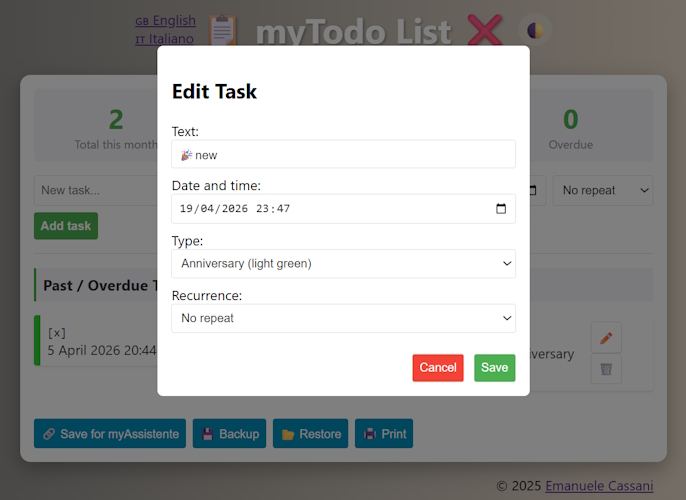
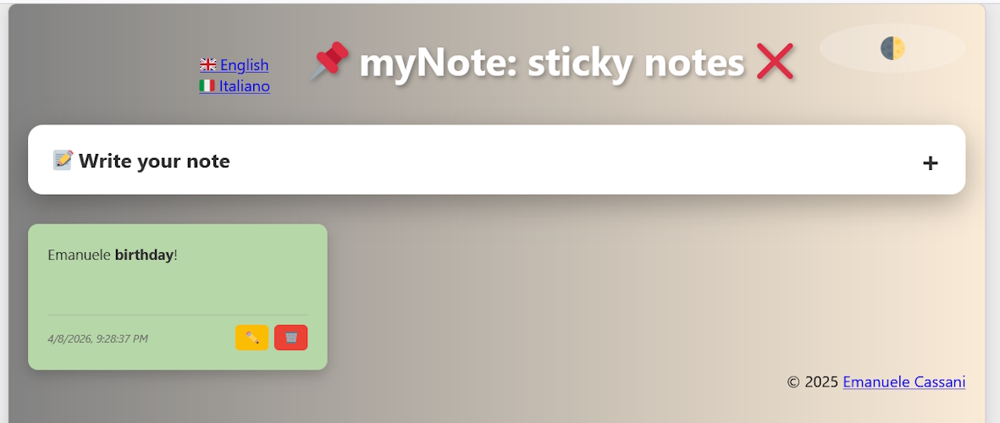
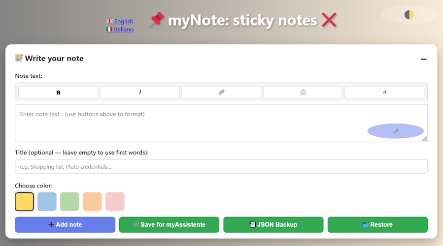

(3) Manuale plugin
- Scopo: Questo manuale ti guida nell'uso delle mini App inserite come plugin in myAssistente.
- Prerequisiti: myAssistente funzionante.
- Sezioni: myAgenda, myTodo, myNote
I plugin derivano da mini App create per fornire servizi di base che tutelino la privacy al 100%, funzionanti in locale senza necessità di registrazione. Ne trovi altre sul sito www.steppa.net/cassani
_dati/asset/plugin/, mentre i dati da condividere con myAssistente sono in formato .json nella cartella _dati/plugins/.
myAssistente carica tutti i file .json dei dati salvati dai plugin nella cartella _dati/plugins/ ad ogni avvio e si possono richiamare dalla memoria (comandi trova o elenca memoria).
myAgenda
L’applicazione myAgenda è inclusa in myAssistente e può essere avviata col comando apri myAgenda o cliccando sul relativo pulsante sotto SHORTCUT.

Ci si muove tra i mesi mediante le frecce in alto. Il pallino indica il giorno corrente; i giorni colorati indicano che è presente una nota; quando il giorno è barrato da una X significa che l'evento è stato completato.
Spostare il cursore sui giorni per vedere l'evento e cliccarci sopra per inserire/modificare i dati o per cancellarlo/completarlo:

In Ricorrenza si imposta se l'evento deve essere ripetuto tutti gli anni o solo quest'anno. NOTA: quando l'evento viene segnato come completato (X), è importante decidere se completarlo Solo quest'anno o per Tutti gli anni a seguire.
Cliccare su Impostazioni per visualizzare la schermata della configurazione.

In Etichette dei colori si possono cambiare le intestazioni colorate assegnate ai diversi eventi. In Gestione dati (backup) si possono salvare i dati per myAssistente o effettuare un backup/ripristino in locale.
Per tutelare la privacy al 100%, i dati di myAgenda sono salvati esclusivamente nella memoria del browser locale. Se cancellate la memoria o usate un altro browser, l'unico modo per recuperarli è tramite
Ripristina del backup.Con
Salva per myAssistente assicurati di salvare la memoria nella cartella _dati/plugins/myAgenda.json, l'unica letta da myAssistente all'avvio.
myTodo
L’applicazione myTodo è inclusa in myAssistente e può essere avviata col comando apri myTodo o cliccando sul relativo pulsante sotto SHORTCUT.

Appare la lista delle cose da fare.
A sinistra le task scadute, a destra quelle ancora attive.
I pulsanti sono simili a quelli delle altre mini App.
Per tutelare la privacy al 100%, anche per myTodo i dati sono salvati esclusivamente nella memoria del browser locale. Se cancellate la memoria o usate un altro browser, l'unico modo per recuperarli è tramite
Ripristina del backup.Con
Salva per myAssistente assicurati di salvare la memoria nella cartella _dati/plugins/myTodo.json, l'unica letta da myAssistente all'avvio.
Clicca sul simbolo della matita per modificare un task della lista o sul cestino per cancellarlo.

Dalla finestra che appare si possono modificare i vari dati. Usando Ricorrenza, il task può essere singolo o ripetuto nel tempo.
myNote
L’applicazione myNote è inclusa in myAssistente e può essere avviata col comando apri myNote o cliccando sul relativo pulsante sotto SHORTCUT.

Appariranno le note (sono spostabili cliccandoci sopra e mantenendo premuto il tasto del mouse).
Per aggiungere una nota cliccare su +.

Il testo della nota accetta formato HTML (opzionale). Per usarlo si possono usare i tasti sopra la finestra di inserimento.
Opzioni utili:
- Link: Scrivi un testo nella nota, selezionalo e clicca sul simbolo del link. Apparirà una finestra dove inserire l'indirizzo web e il testo diventerà cliccabile.
- Copia negli appunti: Scrivi un testo nella nota, selezionalo e clicca sul simbolo del notepad. La parola/frase diventerà cliccabile e, premendola, il testo verrà copiato negli appunti (utile per copiare indirizzi o password complesse).
Per tutelare la privacy al 100%, anche per myNote i dati sono salvati esclusivamente nella memoria del browser locale. Se cancellate la memoria o usate un altro browser, l'unico modo per recuperarli è tramite
Ripristina del backup.Con
Salva per myAssistente assicurati di salvare la memoria nella cartella _dati/plugins/myNote.json, l'unica letta da myAssistente all'avvio.
Documentazione
La documentazione disponibile per myAssistente5.
I documenti si trovano anche nella cartella /DOCS del repository. Per eventuale documentazione mancante, fare riferimento alla documentazione in inglese o in italiano delle release precedenti.
- (1) Manuale installazione — installazione del programma per Windows, Linux o multipiattaforma
- (2) Manuale utente — interfaccia utente di myAssistente
- (3) Manuale plugin — myAgenda, myNote e myTodo
- (4) Manuale configurazione — file
config.jsonconfigurazioni avanzate - (5) Manuale memoria — file
memory.jsonconfigurazioni avanzate - (6) Manuale lingue — file
lang[].jsoncustomizzazioni avanzate - (7) Manuale AIML — file
aiml/[LANG]/[filename].aiml - (8) Manuale AIML avanzato — file
aiml/IT/testConiglio.aiml